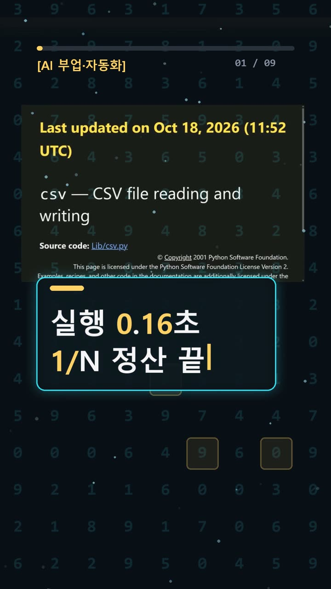
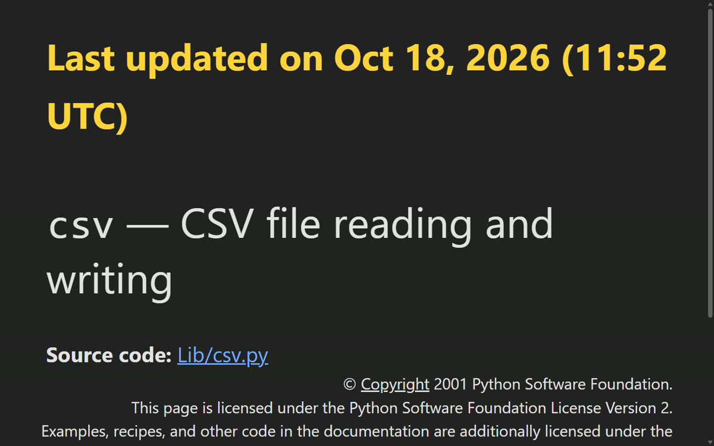
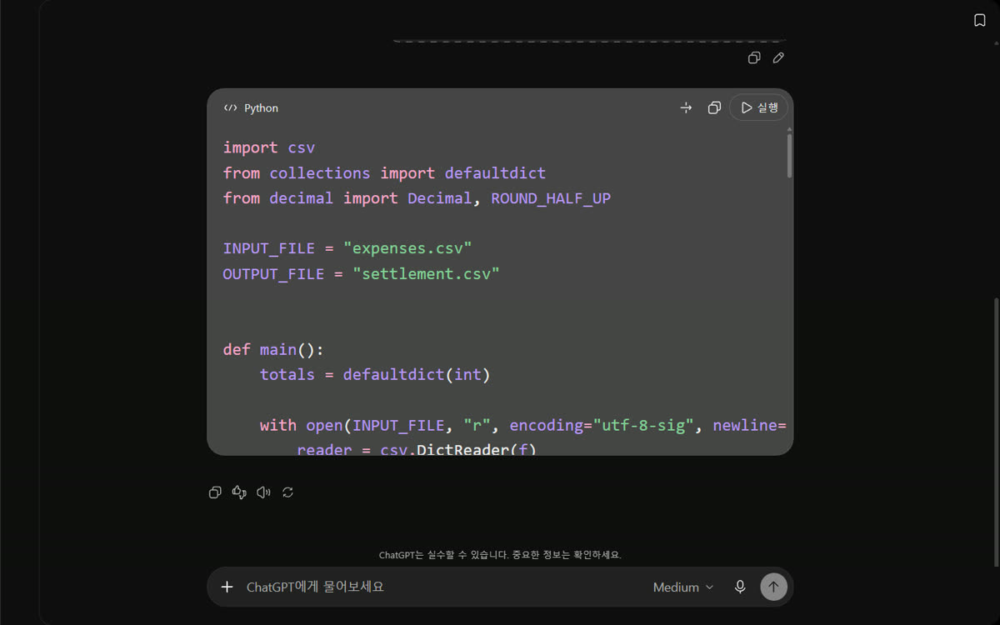
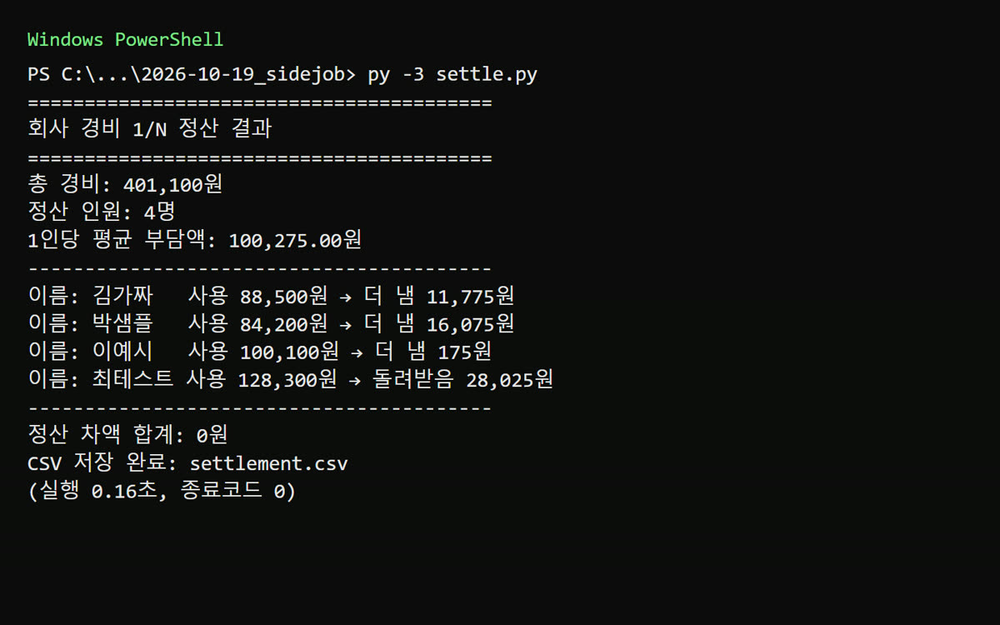

이 포스팅은 쿠팡 파트너스 및 토스쇼핑 쉐어링크 활동의 일환으로, 이에 따른 일정액의 수수료를 제공받습니다.
회식비 CSV, 챗GPT 코드로 1/N 정산해 봤어요
명령어·설정·실패 해결표
| 구분 | 내용 | 해결 |
|---|---|---|
| 명령어 | py -3 --version | |
| 명령어 | py -3 settle.py |
한눈에 보기
- 가짜 회식비 CSV 20줄을 ChatGPT에 붙여 넣고 "표준 라이브러리 csv만 쓰는 정산 코드"를 1번 부탁했어요. 93줄짜리 코드가 나왔어요.
- 코드를 한 글자도 고치지 않고 실행했어요. 0.16초 만에 끝났고, 4명의 사람별 합계가 우리가 따로 계산한 값과 모두 같았어요.
- 이 코드는 회사에 경비를 청구하는 경비 정산용이 아니에요. 모임에서 각자 쓴 돈을 모아 1/N로 나누는 더치페이 정산 코드예요.
> 실험 영상(쇼츠): https://youtube.com/shorts/6sKrGqtLWBc
시작 전에 확인할 것
| 항목 | 내용 | |---|---| | 요금 | [OpenAI 공식 요금표](https://openai.com/chatgpt/pricing/) 기준 Free 플랜에서도 텍스트 채팅은 무제한이에요(남용 방지 조치는 적용돼요). 파일 업로드 메시지는 Free에서 횟수 제한이 있어요. 유료는 Go ₩13,000/월, Plus ₩29,000/월, Pro 최저 ₩159,000/월(VAT 포함)이에요. | | 계정 | [chatgpt.com](https://chatgpt.com/) 로그인이 필요해요. | | OS | Windows 10/11 + Python 3. 우리는 Python 3.13.7로 테스트했어요. | | 설치할 것 | Python 하나만 있으면 돼요. pip(파이썬 추가 프로그램 설치 도구) 설치나 API 키(서비스 접속용 비밀번호 같은 값)는 필요 없어요. | | 파일 인코딩 | CSV는 UTF-8로 저장하세요. 인코딩은 글자를 파일에 저장하는 방식이에요. |
정직하게 밝혀요: 이번 실험은 유료 계정으로 했어요. 무료 계정에서도 같은 코드가 나오는지는 확인하지 않았어요. 실명·카드번호·계좌는 넣지 말고, 연습할 때는 가짜 데이터만 쓰세요.
설치 방법
1. Python 설치 — 📄 공식 문서 기준
Windows에는 Python이 기본으로 들어 있지 않아요. 우리 PC에는 이미 깔려 있어서 설치 과정은 따로 해 보지 않았어요. 아래는 [공식 'Using Python on Windows' 문서](https://docs.python.org/3/using/windows.html)에 적힌 방법이에요.
- ① Microsoft Store에서 Python Install Manager를 받거나 python.org/downloads에서 받아요. 둘은 같은 프로그램이에요.
- Store: "Install"을 눌러요.
- python.org에서 받은 파일: 두 번 클릭한 뒤 "Install"을 골라요.
- ② 이게 보이면 성공: 터미널(명령어를 글자로 입력하는 검은 창)에서
python,py,pymanager명령을 쓸 수 있어요.
2. 버전 확인 — ✅ 직접 해 봄
PowerShell(Windows에 들어 있는 터미널)을 열고 입력해요.
py -3 --version
- 이게 보이면 성공: 우리는
Python 3.13.7이 나왔어요.

*▲ 파이썬 공식 csv 문서. 페이지 맨 아래 있는 갱신일 문구(Oct 18, 2026)를 제목 위로 옮겨 크게 보이게 캡처했어요.*
csv 모듈은 파이썬에 처음부터 들어 있는 표준 라이브러리(기본 부품)예요. 따로 설치할 필요가 없어요. ([공식 csv 문서](https://docs.python.org/3/library/csv.html))
사용 방법
1. CSV 만들기 — ✅ 직접 해 봄
- ① 메모장을 열고 첫 줄에
날짜,이름,항목,금액을 써요. 그 아래로 한 줄에 기록 하나씩 적어요. - ② 저장할 때 인코딩을 UTF-8로 고르고
expenses.csv라는 이름으로 저장해요. - 이게 보이면 성공: 첫 줄이 열 이름이고, 그 아래로 한 줄에 기록 하나씩 있어요.
- 우리는 가짜 이름 4명(김가짜·박샘플·이예시·최테스트)과 항목 5가지(점심/택시/커피/문구/회식)로 20줄을 만들었어요. 파일 크기는 712바이트였어요.
📄 [OpenAI 도움말](https://help.openai.com/en/articles/8437071)도 빈 줄·빈 열이나 한 시트에 표 여러 개를 넣지 말라고 해요.
2. ChatGPT에 요청하기 — ✅ 직접 해 봄
- ① chatgpt.com에 로그인해요. 첫 화면에 '어떤 작업을 할까요?' 문구가 보이면 돼요.
- ② CSV 내용을 붙여 넣고 아래처럼 부탁해요.
파이썬 표준 라이브러리 csv만 써서 expenses.csv를 읽어 사람별 합계와 1/N 정산을 settlement.csv로 저장하고 화면에도 출력하는 코드만 출력해
- 이게 보이면 성공: 답변에
import csv로 시작하는 파이썬 코드가 나와요.
우리는 임시 채팅을 켜고 했어요. 화면에는 메모리·사용자 지정 지침을 무시하고 기록에도 남지 않는다고 나와요. 📄 공식 도움말은 CSV 파일을 첨부하는 방법을 안내해요. 우리는 첨부 대신 글로 붙여 넣었어요. 이렇게 하면 무료 플랜의 업로드 횟수 제한에 걸리지 않아요.

*▲ 임시 채팅에서 받은 코드 일부(import csv, utf-8-sig). 계정 정보는 화면에 없어요.*
3. 코드 저장하고 실행하기 — ✅ 직접 해 봄
- ① 받은 코드를 CSV와 같은 폴더에
settle.py로 저장해요. - ② 그 폴더에서 PowerShell을 열고 실행해요.
py -3 settle.py
- 이게 보이면 성공: 화면에 정산 결과가 나오고, 폴더에
settlement.csv가 생겨요.
4. 결과 확인하기 — ✅ 직접 해 봄 + 📄 공식 문서 기준
- 코드가 파일을
open(..., newline='')로 열고csv.DictReader를 쓰는지 봐요. 공식 csv 문서가 권장하는 방식이에요. 우리가 받은 코드에는 둘 다 들어 있었어요. - 📄 csv 모듈은 읽은 값을 모두 글자(문자열)로 줘요. 숫자로 자동으로 바꿔 주지 않아요. 금액을 더하는 코드라면 숫자로 바꾸는 부분이 있는지 확인하세요.
- 사람별 합계와 차액 합계 0원은 꼭 직접 확인하세요. AI가 짠 코드는 틀릴 수 있어요. 처음 한 번은 손 계산과 맞춰 보세요.
우리가 직접 해 본 결과
확인 수준: verified. ChatGPT에 1번 요청했고, 받은 코드를 그대로 실행했어요. 결과는 따로 계산한 값과 같았어요.
먼저 PowerShell의 Import-Csv로 정답표를 만들었어요. 김가짜 88,500원, 박샘플 84,200원, 이예시 100,100원, 최테스트 128,300원, 총 401,100원이에요.
그다음 settle.py(2,626바이트)를 실행했어요. 종료 코드는 0(오류 없이 끝남)이었고 0.16초 걸렸어요.
- 총 경비 401,100원, 4명, 1인당 100,275원
- 김가짜 11,775원 / 박샘플 16,075원 / 이예시 175원: 덜 써서 이만큼 더 내야 해요(출력에는 '더 냄'으로 나와요)
- 최테스트: 28,025원 돌려받음
- 정산 차액 합계: 0원

*▲ 실제 실행 출력의 숫자를 그대로 두고 큰 글씨 터미널 화면으로 다시 보여 준 이미지예요. 사람별로 3줄씩이던 출력은 한 줄로 줄였어요.*

*▲ 만들어진 settlement.csv(261바이트). 열은 이름/사용합계/1/N부담액/정산차액/정산구분/정산금액이고 4행이에요.*
손으로 할 때와 비교(우리 계산 기준)
- 손 계산: 사람별로 더하기 20번 + 총합 1번 + 나누기 1번 + 차액 4번 = 26번
- 이번 방식: CSV 저장 → ChatGPT에 요청 → 코드 저장 → 실행 = 4단계. 다음 달부터는 CSV만 바꾸고 실행하면 1단계
예상과 달랐던 점: 코드 안에 쓰지도 않는 from decimal import Decimal, ROUND_HALF_UP 한 줄이 들어 있었어요. 실행에는 문제가 없었어요.
우리는 여기서 막혔어요: 답변이 몇 초 만에 나왔는지 재려고 자동 감지 스크립트를 썼어요. 그런데 화면 요소를 잘못 짚어서 측정에 실패했어요. 확인한 건 "보내고 118초가 지났을 때 이미 답이 다 나와 있었다"는 사실뿐이에요. 그래서 "2분 안에"라고만 말할 수 있어요.
실험의 한계: 요청은 1번, 데이터는 가짜 20줄이었고 유료 계정이었어요. 같은 질문이라도 매번 다른 코드가 나올 수 있어요. 기록 전체는 [AI 실험노트](https://compaction19-blip.github.io/ai-lab-notes/)에 정리해 둘게요.
자주 막히는 곳
1. py가 없다고 나와요 → Python이 없거나, 설치돼 있어도 PATH 같은 PC 설정 문제로 명령이 안 잡힌 걸 수 있어요. 위 '설치 방법' 1번을 먼저 하세요(Windows 기본 미포함). 2. CSV를 읽다가 오류가 나요 → 메모장에서 ANSI(CP949)로 저장했을 수 있어요. 받은 코드가 encoding='utf-8-sig'로 읽기 때문이에요. UTF-8로 다시 저장하세요. (CP949로 저장한 파일은 우리가 직접 시험하지 않았어요.) 3. 인코딩을 코드에 꼭 적어야 하나요? → 적는 게 안전해요. 3.15 문서는 CSV를 기본적으로 UTF-8로 읽는다고 해요. 하지만 [3.13 문서](https://docs.python.org/3.13/library/csv.html)는 시스템 기본 인코딩으로 읽는다고 해요. 버전마다 다르니 open(..., encoding=...)으로 정해 두세요. 4. 화면 한글이 깨져 보여요 → 우리도 콘솔 설정 없이 한 번 더 실행했을 때(0.11초) 한글이 깨져 보였어요. 원인은 우리 캡처 도구의 인코딩이었고, settlement.csv 파일은 멀쩡했어요. 결과는 파일로 확인하세요.
🧰 오늘의 실험실 생존 세트 — 밤새 실험 돌릴 때 쟁여 두는 것들
 🥤 음료/생수제주삼다수 2L 6개별점 5 · 후기 1,458,835쿠팡에서 보기
🥤 음료/생수제주삼다수 2L 6개별점 5 · 후기 1,458,835쿠팡에서 보기 🍜 라면/간식오뚜기 열라면 컵 12개별점 5.0 · 후기 15,507쿠팡에서 보기
🍜 라면/간식오뚜기 열라면 컵 12개별점 5.0 · 후기 15,507쿠팡에서 보기 🍳 육류/간편식/식료품오뚜기 흰밥 12개별점 5 · 후기 855,891쿠팡에서 보기
🍳 육류/간편식/식료품오뚜기 흰밥 12개별점 5 · 후기 855,891쿠팡에서 보기 🧴 화장품/바디케어/생필품코멧 3겹 화장지 30롤별점 4.5 · 후기 932,319쿠팡에서 보기🥤 마실 것(음료·커피·생수)던킨 제로 아이스티별점 4.8 · 후기 5,386토스쇼핑에서 보기🍪 먹을 것(간식·라면·간편식·식료품)애슐리 볶음밥 10종별점 4.7 · 후기 11,315토스쇼핑에서 보기🧴 바를 것·생필품(화장품·바디케어·생활소모품)베베앙 물티슈 10팩별점 4.8 · 후기 15,851토스쇼핑에서 보기
🧴 화장품/바디케어/생필품코멧 3겹 화장지 30롤별점 4.5 · 후기 932,319쿠팡에서 보기🥤 마실 것(음료·커피·생수)던킨 제로 아이스티별점 4.8 · 후기 5,386토스쇼핑에서 보기🍪 먹을 것(간식·라면·간편식·식료품)애슐리 볶음밥 10종별점 4.7 · 후기 11,315토스쇼핑에서 보기🧴 바를 것·생필품(화장품·바디케어·생활소모품)베베앙 물티슈 10팩별점 4.8 · 후기 15,851토스쇼핑에서 보기정리
모임 회비처럼 매달 반복되는 1/N 계산이라면, CSV 한 장과 ChatGPT 코드 한 번이면 다음 달부터는 실행만 하면 돼요. 단, 회사 경비 청구 규칙까지 알아서 처리해 주는 코드는 아니에요. 그리고 처음 한 번은 꼭 손 계산과 맞춰 보세요.
이 글은 실제 실험 기록을 바탕으로 AI 도구와 함께 정리했어요.
혹시 글에서 틀린 부분이나 고쳐야 할 부분이 보이면 유튜브·스레드 댓글로 알려 주시면 정말 감사하겠습니다. 바로 확인해서 고칠게요!
🛒 다시 보기: 오늘의 생존 세트
🥤 음료/생수제주삼다수 2L 6개별점 5 · 후기 1,458,835쿠팡에서 보기🍜 라면/간식오뚜기 열라면 컵 12개별점 5.0 · 후기 15,507쿠팡에서 보기🍳 육류/간편식/식료품오뚜기 흰밥 12개별점 5 · 후기 855,891쿠팡에서 보기🧴 화장품/바디케어/생필품코멧 3겹 화장지 30롤별점 4.5 · 후기 932,319쿠팡에서 보기🥤 마실 것(음료·커피·생수)던킨 제로 아이스티별점 4.8 · 후기 5,386토스쇼핑에서 보기🍪 먹을 것(간식·라면·간편식·식료품)애슐리 볶음밥 10종별점 4.7 · 후기 11,315토스쇼핑에서 보기🧴 바를 것·생필품(화장품·바디케어·생활소모품)베베앙 물티슈 10팩별점 4.8 · 후기 15,851토스쇼핑에서 보기🎙️ AI 음성이 궁금하다면
우리 채널 내레이션은 타입캐스트를 쓰지만, 영어·다국어 AI 음성을 실험해 보고 싶다면 ElevenLabs도 많이 쓰여요.
ElevenLabs 둘러보기 (제휴)🎬 쇼츠로 다시 보기 · 🧵 함께 이야기하기
🧵 스레드 @alligatorxor에서 오늘 실험 이야기 나누기 · ▶ 유튜브 새AI실험노트 다른 쇼츠 보기 · 📒 실험노트 홈